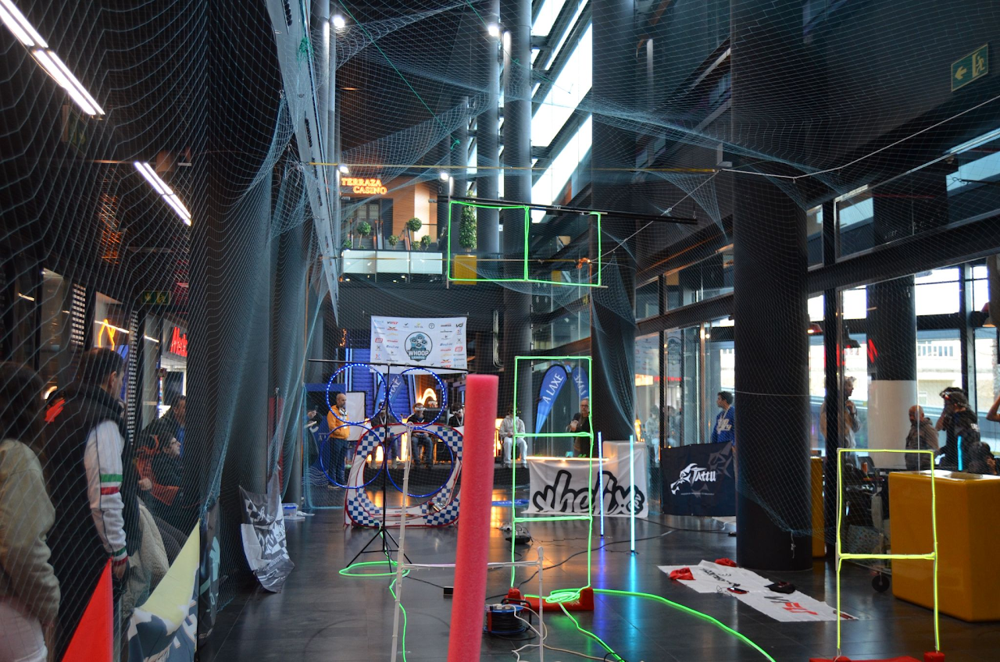

01
31 · 01 · 2026
CARRERA 01 · VIGO
CENTRO DE OCIO A LAXE
La primera carrera de la historia de la Galicia Whoop League. Vigo fue el escenario elegido para dar comienzo a la temporada.
🥇
JaNo
🥈
Iron
🥉
Xistro
4º
DiegoMar

VIGO